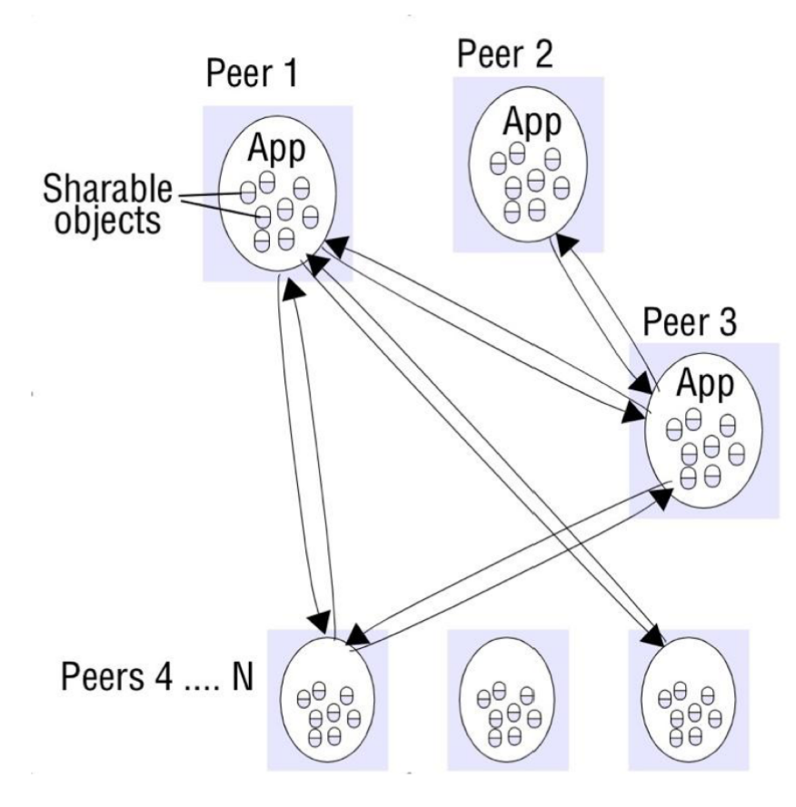
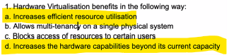
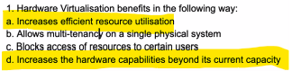
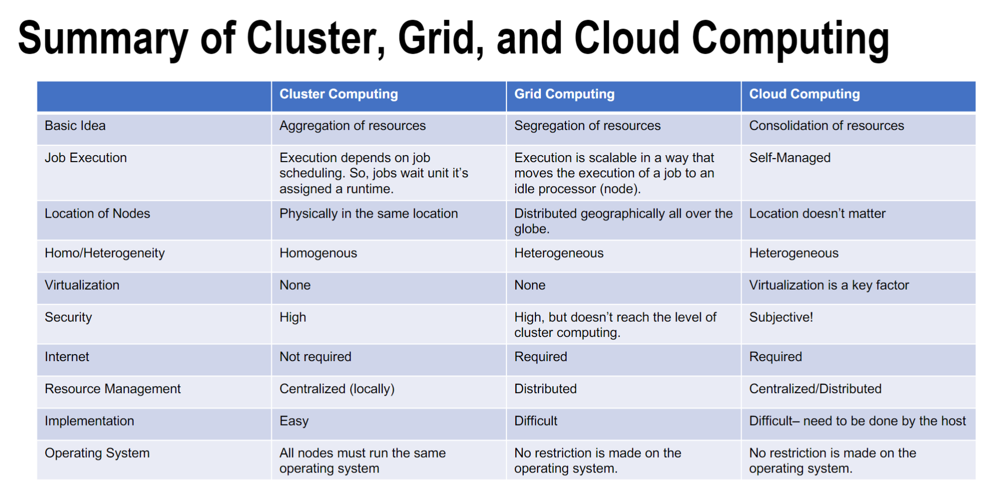
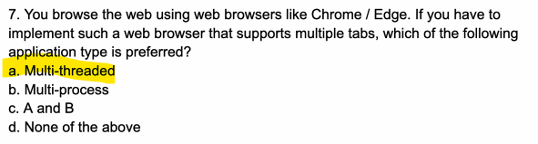
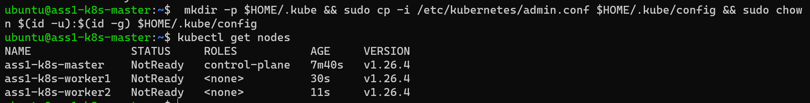

FIT5225 Cloud computing and security 2023 s1
Create time: 2023-02-24 Last update: 2023-02-24
How to use the FIT study Note document#
- download the markdown file repository and navigate to the
docsfolder - view all the markdown files via Obsidian vault that can show the linked section in the note document

-
You may find some extra material or program template repository in the Course Brief introduction for the FIT Note markdown Document (some course don't have )
-
you can view the web page which transfer from MD file online but will lose the extra information or wrong markdown display
FIT5225 Cloud computing and security Course Brief introduction#


You need to have a good grasp of computer networks (TCP/IP), be familiar with Linux and its shell scripting and command line, you need to use python a lot and there are many hands-on activities in this unit.
Unit learning Objectives
1. describe fundamental principles and paradigms of cloud computing;
2. identify appropriate design choices when developing real-world cloud computing applications;
3. apply different cloud programming methods and tools;
4. demonstrate a comprehensive understanding of virtualisation and container technologies;
5. design and implement a highly scalable cloud-based application;
6. analyse and evaluate the security of the current cloud services and in-cloud applications.
FIT5225 - Cloud computing and security done for the year 2023. (Semester 1)
week 1 Introduction to Cloud Computing#
Lecture#
Learning Objectives:#
describe fundamental principles and paradigms of cloud computing
identify appropriate design choices when developing real-world cloud computing applications
Summary
• Computer Networks vs Distributed Systems
• Distributed Systems Challenges: heterogeneity, openness, security, scalability, failure handling, concurrency, transparency, Quality of Service.
• Cloud computing is all about delivering computing services over the Internet.
• Technologies significantly contributed to make cloud computing viable: Grid computing, webservices, virtualization, autonomic computing
• Cloud Deployment Models: private, community, public, hybrid
• Cloud Service Models: IaaS, PaaS, SaaS
• Cloud and distributed computing skill is at the top of the most demanded job skills right now.
Computer Networks vs Distributed Systems#
- A Computer Network: Is a collection of spatially separated, interconnected computers that exchange messages based on specific protocols. Computers are addressed by IP addresses.
- A Distributed System: Multiple computers on the network working together as a system. The spatial separation of computers and communication aspects are hidden from users
Distributed System Challenges#
- Heterogeneity- use hardware and software resources of varying characteristics (how to solve: Using standard protocol; agreed upon message formats; API; Middleware; )
- Openness: ability of extending the system in different ways by adding hardware or software resources (key interfaces; uniform communication mechanism)
- Security: aspects of security (Confidentiality; Integrity; Availability); Security Mechanisms(Encryption; Authentication; Authorization)
- Scalability: can handle the growth of the number of users.
- Concurrency 并发: access the same resource at the same time;
- Failure Handling: Detecting, Masking, Tolerating, Recovery, Redundancy
- Transparency
- Quality of Service (QoS) non-functional properties of systems that affect QoS are: Reliability , Security, Performance, Adaptability, Availability
Client-Server distributed architectures#
 Clients invoke services in servers and results are returned. Servers in turn can become clients to other services
Clients invoke services in servers and results are returned. Servers in turn can become clients to other services
Peer-to-Peer#
 Each process in the systems plays a similar role interacting cooperatively as peers (playing the roles of client and server simultaneously)
Cloud Computing#
An IT paradigm that enables access to shared pools of configurable system resources in form of services that can be rapidly provisioned with minimal management effort, often over the Internet. delivering computing services over the Internet.
Avoid expensive up-front investments of establishing their own infrastructure
Cloud is the “invisible” backend to many application
Cloud Service Models#

Software as a Service (SaaS)#
provides applications and software to the customer in utility based model which is accessible from a thin client interface such as a Web browser • Salesforce.com
Platform as a Service (PaaS)#
provides programming languages and tools to deploy application onto the cloud infrastructure Google App Engine
Infrastructure as a Service (IaaS)#
provides capabilities for the customers to provision computational resources such as processing, storage, network, and other fundamental computing resources Virtual Machines(VMs)/Containers • Example: Amazon EC2/
Grid Computing#
computer cluster is a set of computers connected by a local area network (LAN) that work together can be viewed as a single system
Grid computing: A type of parallel and distributed system to share compute and storage resources distributed across different administrative domains

Web service#
A Web service is a software system designed to support interoperable machine-to-machine interaction over a network using HTTP and technologies such as XML, SOAP, WSDL, and UDDI.

Hardware Virtualization#
 hides the physical characteristics of a computing platform from the users, presenting instead an abstract computing platform
hides the physical characteristics of a computing platform from the users, presenting instead an abstract computing platform
Autonomic Computing#
Autonomic computing refers to the self-managing characteristics of distributed computing resources, adapting to unpredictable changes while hiding intrinsic complexity to operators and users
quiz#


 



workshop#
In this week tutorial classes, you will learn to work with Nectar as an example of a community cloud. You are supposed to run a virtual machine in the Nectar cloud and get familiar with the Nectar dashboard.
Upon successful completion of this tutorial, you will gain the required knowledge to access the Nectar portal, create/modify virtual machines, establish remote connections to your VMs, and perform administration tasks such as installing a web server and opening required ports using security groups.
how to set#
- generate ssh key
ssh-keygen - set instance in nector
- import your public key to match
- ssh into your instance
ssh -i <full-path-to-private-key> ubuntu@<IP-address> - install the latest version of Apache web server
$ sudo apt update && sudo apt install -y apache2 curl - print the default Apache landing page
$ curl localhost
Week 2 Grid and Cluster Computing#
Learning Objectives:#
- describe fundamental principles and paradigms of cloud computing
- identify appropriate design choices when developing real-world cloud computing applications
Reference#
Cluster Computing: https://en.wikipedia.org/wiki/Computer_cluster
Grid Computing: https://en.wikipedia.org/wiki/Grid_computing
Lecture#
Learning Outcomes#
- describe fundamental principles and paradigms of cloud computing;
- identify appropriate design choices when developing real-world cloud computing applications;
Flynn Matrix#
- Single instruction stream, single data stream (SISD)
- Multiple instruction streams, single data stream (MISD)
- Single instruction stream, multiple data streams (SIMD)
- Multiple instruction streams, multiple data streams (MIMD


parallel Computing Architectures#
选择哪种系统取决于应用程序的特性和要求，以及系统的性能和可伸缩性需求。 + UMA系统适 合规模较小、数据共享需求较强的多处理器系统； + SMP系统则更适合规模较大、数据共享需求 相对较弱的多处理器系统； + NUMA系统适合规模更大的多处理器系统，特别是需要高性能和可 伸缩性的应用程序； + MPP系统适合处理大规模数据集和需要大量计算资源的应用程序
Massively Parallel Processors (MPP)#
100+ nodes with a high-speed interconnection network/switch; Each node has 1+ processors, sharing of the main memory; Separate copy of OS runs on each node
These MPP databases(BigQuery Enterprise Data Warehouse | Google Cloud) are designed to handle large volumes of data and provide high performance and scalability. They are commonly used in data warehousing and business intelligence application
Symmetric Multi-processors (SMP)#
All global resources are shared among processors; Nodes run the same OS (Enterprise servers; High-performance computing cluster; )
SMP architecture is commonly used in medium- to large-scale multiprocessor systems, and provides a simple and efficient way to achieve multiprocessing without the complexities of NUMA (Non-Uniform Memory Access) or MPP (Massively Parallel Processing) architectures. SMP systems are typically used for applications that require shared access to a moderate amount of memory and do not require high scalability or perform
Non-Uniform Memory Access (NUMA)#
Each processor has a global view of the available memory shared- address-space computer with local and global memories (supercomputer; High-performance computing cluster)
NUMA systems are typically used for large-scale parallel processing applications that require high performance and scalability. They provide fast access to memory for each processor by dividing the system memory into local and remote memory regions, and optimizing access to these regions based on the location of the data being accessed. NUMA architecture can be more complex and expensive to implement than UMA architecture, but it can provide better performance and scalability for certain types of application


Clusters#
Collection of workstations interconnected by a high-speed network, with nodes running a single system image
Distributed Systems#
Grids/P2P/Internet Computing/Clouds
Amdahl’s Law#
$1/((1-p)+(p/n))$

Parallel Programming#
Shared Memory • Threads • Message Passing • Data Parallel • Hybrid
Why?
- To save time
- Solve bigger and more complex problems
- Leverage concurrency
- It’s very expensive to build high capacity and powerful CPUs and connect them together
How
- Phase parallel
- Divide and conquer
- Pipeline
- Process farm
- Work pool
Limitations and Challenges
+ Finding efficient ways of parallelizing the source code
+ Designing and developing scalable algorithms is challenging
+ Message passing and job submission are not automated and need to be taken care of by the user/programmer
+ Managing jobs in a parallel and distributed environment is prone to lots of errors, think about communication, resource allocation, etc
Cluster Computing#
Cluster computing is a collection of tightly or loosely connected computers that work together so that they act as a single entity. The connected computers execute operations all together thus creating the idea of a single system. The clusters are generally connected through fast local area networks (LANs)
Grid Computing#
grid as a system that coordinates resources which are not subject to centralized control, using standard, open, general-purpose protocols and interfaces to deliver nontrivial qualities of service
Summary of Cluster, Grid, and Cloud Computing#

Open Multi-Processing (OpenMPI)#
A master thread forks a number of sub-threads and divides tasks between them
Open Multi-Processing (OpenMP) is an API that includes directives for multi-threaded, shared memory parallel programming. Thread-based rather than using message passing
Message Passing Interface (MPI)#
 MPI is a standardized and portable message-passing system to function on a wide variety of parallel computers. Widely adopted for inter-process communication in parallel systems. • Supports both p2p and collective modes of communication
MPI is a standardized and portable message-passing system to function on a wide variety of parallel computers. Widely adopted for inter-process communication in parallel systems. • Supports both p2p and collective modes of communication
QUIZ#





Tutorial#
The main purpose of this tutorial is to help you gain and develop a better understanding of distributed systems, parallel programming, and message passing between processes. You will build, run, and debug multi-threaded programs as well as simple programs that use an MPI emulator to demonstrate message passing between processes running on different CPU cores.本教程的主要目的是帮助您更好地理解分布式系统、并行编程和进程间的消息传递。您将构建、运行和调试多线程程序以及使用 MPI 模拟器的简单程序，以演示在不同 CPU 内核上运行的进程之间的消息传递。
Week 3 Virtualization#
Lecture#
- Hardware Virtualization
- Virtualization Features: Isolation, Encapsulation, Portability, and Interposition’
- Hypervisor, Virtual Machine, Guest Operating System, Host
- Processor, Memory and I/O Devices virtualization
- Live and cold VM migration
- Case studies: Xen and VMWare
describe fundamental principles and paradigms of cloud computing;
demonstrate a comprehensive understanding of virtualisation and container technologies;
Virtualization#
Virtualization is a broad concept that refers to the creation of a virtual version of something, whether hardware, a software environment, storage, or a network.
Motivations for virtualization#
- Optimal allocation of the virtual machines to physical server
- Virtualization is very relevant to the provision of cloud computing (multi-tenancy)
- Create and destroy virtual machines readily and with little overhead
- Several different operating system environments on a single desktop computer
Virtualization Features#
- Isolation隔离 (Fault isolation, performance, software isolation)
- Encapsulation封装 (Cleanly capture all VM state, enables VM snapshots, clone VMs easily, make copies)
- Portability可移植性 (Independent of physical hardware, enables live and cold migration of VMs)
- Interposition插入(Transformations on instructions, memory, I/O Enables transparent resource over commitment, encryption, compression, replication)
Virtualization Types#
 + Full virtualization : identical interface to the underlying physical architecture unmodified guest operating system(VMware, Virtualbox)
+ Full virtualization : identical interface to the underlying physical architecture unmodified guest operating system(VMware, Virtualbox)
+ Paravirtualization : guest operating systems to communicate with the hypervisor. guest os to be modified in order to interact with paravirtualization interface communicates with the hypervisor using driver higher performance (XEN)
Hardware Virtualization#
The term virtualization is often synonymous with hardware virtualization/system virtualization. “a technique for hiding the physical characteristics of computing resources which allows having multiple virtual machines (VMs) over the underlying physical machine architecture, with each virtual machine running a separate operating system instance.
Hypervisor 管理程序#
 + Hardware virtualization is implemented by a thin layer of software on top of the underlying physical machine architecture referred to as Hypervisor (Virtual Machine Monitor).
+ Hardware virtualization is implemented by a thin layer of software on top of the underlying physical machine architecture referred to as Hypervisor (Virtual Machine Monitor).
+ Virtual Machine: A representation of a real machine using hardware/software that can host a guest operating system
+ Guest Operating System: An operating system that runs in a virtual machine
+ Host: the original environment where the guest OS is supposed to be managed
Computing Systems#
 1. Instruction Set Architecture (ISA)
1. Instruction Set Architecture (ISA)
2. Application Binary Interface (ABI)
3. Application programming interface (API)
For any operation to be performed in the application level API, ABI and ISA are responsible for making it happen
Virtualizing Memory#
Tutorial#
upon successful completion of this tutorial, you will gain the required knowledge to access Oracle Cloud Infrastructure (OCI), create/modify virtual machines, running a micro web framework, and working with Postman
1. sudo apt-get update && sudo apt-get install -y python3-pip curl && pip3 install flask install the python3-pip and curl packages, and then install the flask package using pip3
2. touch flask_script.py create py file
3. nano flask_script.py open the file in the nano text editor
4. sudo apt update check for any updates available for the installed packages and update
5. sudo apt install firewalld install firewall service that provides a dynamically managed firewall with support for network/firewall zones
6. sudo systemctl enable firewalld firewalld service will start automatically every time the system boots up
7. sudo firewall-cmd --permanent --zone=public --add-port=5000/tc add a permanent rule to the firewall on Ubuntu to allow incoming traffic on port 5000 for TCP protocol.
8. sudo firewall-cmd --reload reload the firewalld firewall configuration. This means that any changes made to the firewall rules, such as adding or removing ports, will take effect immediately without having to restart the firewall service.
9. python3 flask_script.py & command that runs the flask_script.py Python script in the background as a separate process
10. curl -iX GET <IP-ADDR>:5000/ use the curl tool to make an HTTP GET request to the web server running on the specified IP address and port 5000. The server will then respond with an HTTP response that includes the requested data, and the -i option will cause curl to display the HTTP header along with the response body.
Week4 Containers#
describe fundamental principles and paradigms of cloud computing;
demonstrate a comprehensive understanding of virtualisation and container technologies
Lecture#
VMs and Containers
Docker as a containers enabler (Docker Engine Components Docker Images, Image registries, Layers, Dockerfile )
Container Orchestration (DockerSwarm Kubernetes )
Virtualization Advantages and Problems#
Advantages:
+ Minimize hardware costs (CapEx)
+ Easily move VMs to other data centre
+ Consolidate idle workloads
+ Easier automation (Lower OpEx)
Problems:
+ Every VM requires its own dedicated OS
+ Needs maintenance, update
+ VMs are slow to boot Portability issues Between hypervisors and cloud platforms
Containers#
- Containers on a single host share a single OS.
- Containers are fast to start
- Containers are ultra-portable (own file system/data, own networking)
- Containers are isolated
- Multiple copies can be run on the same machine or different machine ⇒ Scalable Same image can run on a personal machine, in a data centre or in a cloud
- Can be stopped, saved and moved to another machine or for later run
Containers vs. VMs#
What’s the Diff: VMs vs. Containers

| VMs | Containers | |
|---|---|---|
| Type | Heavyweight | Lightweight |
| Performance | Limited performance | Native performance |
| CPU overhead | >10% | <5% |
| Disk I/O | >50% | Negligible |
| OS | Each VM runs in its own OS | All containers share the host OS |
| Virtualization | Hardware-level virtualization | OS virtualization |
| Boot time | In minutes | In seconds/milliseconds |
| Memory | Allocates required memory | Requires less memory space |
| Security | Fully isolated and hence more secure (hypercalls) | Process-level isolation, possibly less secure (syscalls on the shared kernel) |
| Impact on Legacy Application | Low-medium | High impact on legacy application |
| applications | Multiple applications on multiple servers | Many copies of a single application |
Docker#
- made Linux containers usable for everybody.
- Most of the project and its tools are written in Golang
DevOps#
-
Ops Perspective
- download an image,
- start a new container,
- log in to the new container,
- run a command inside of it, and then destroy it.
-
Dev Perspective
- pull some app-code from GitHub,
- inspect a Dockerfile,
- containerize the app,
- run it as a container.
Docker Engine#

+ Docker Daemon manages containers, images, builds and more
+ Docker Client communicates with the Docker Daemon to execute commands
+ A REST API can be used for interacting with the Docker Daemon remotely
+ Docker Images are read-only templates that you build from a set of instructions written in your Dockerfile
+ Docker container wraps an application’s software into a box with everything the application needs to run
+ Docker registry is a storage and distribution system for named Docker images. The registry allows Docker users to pull images locally, as well as push new images to the registry (given adequate access permissions when applicable).

Docker engine main components:
- Docker client
- Docker daemon
- Image management, image builds, the REST API, authentication, security, core networking, and orchestration
- containerd
- container lifecycle management
- start | stop | pause | rm....
- runc
- a small, lightweight CLI wrapper for libcontainer
Images#
Containers are built from images and can be saved as image The process of getting images onto a Docker host is called pulling $ docker image pull ubuntu:latest ubuntu is the repository and latest is the tag
layers#

- Docker image is just a bunch of loosely- connected read-only layer
- image is built layer by layer
- Layers in an image can be inspected by Docker commands
- A file in the higher layer obscures the file directly below it. This allows updated versions of files to be added as new layers to the image
- Multiple images can, and do, share layers. This leads to efficiencies in space and performance
Starting a new container#
$ docker container run --name ctr1 -it alpine:latest sh This command creates and runs a new container named ctr1 from the alpine:latest image and attaches an interactive shell to it.

1. When you type command into the Docker CLI, the Docker client converts them into the appropriate API payload and POSTs them to the correct API endpoint
2. The API is implemented in the daemon
3. Once the daemon receives the command to create a new container, it makes a call to containerd
4. containerd uses runc to create containe
5. runc interfaces with the OS kernel to pull together all of the constructs necessary to create a container (namespaces, cgroups etc
Docker command#
$ docker container ls: This command lists all the running containers on the system. It shows information such as container ID, image name, command, creation time, status, and port mappings.$ docker container exec -it 3027eb644874 bash: This command executes a bash shell in an existing container with ID 3027eb644874. The -it option makes the shell interactive and attaches it to the terminal.$ docker container stop 3027eb64487: This command stops a running container with ID 3027eb64487. It sends a SIGTERM signal to the main process inside the container and waits for a grace period before killing it with SIGKILL if it does not exit.$ docker container rm 3027eb64487: This command removes a stopped container with ID 3027eb64487. It deletes all the files and data associated with the container from the system.
Tutorial#
Install Docker#
sudo apt updateupdates the package index and the software repositories on the system. It retrieves the information about the new or updated packages versions, dependencies, and their URLs.sudo apt install -y apt-transport-https ca-certificates curl gnupg software-properties-common lsb-releasethis command is installing essential packages required for managing and installing softwaresudo mkdir -m 0755 -p /etc/apt/keyringsthis command creates a new directory namedkeyringsunder the/etc/aptdirectory with specified permissions. The purpose of this directory is to store GPG keys that are required to authenticate packages in apt repositories.curl -fsSL https://download.docker.com/linux/ubuntu/gpg | sudo gpg --dearmor -o /etc/apt/keyrings/docker.gpgdownloads the Docker GPG key file, decrypts it usinggpg, and saves it in the/etc/apt/keyringsdirectory with the namedocker.gpg. This allows theaptpackage manager to authenticate and verify packages from Docker repositories.sudo chmod a+r /etc/apt/keyrings/docker.gpgthis command allows all users to read the Docker GPG key file (docker.gpg). This is necessary to allow theaptpackage manager to authenticate and verify packages from Docker repositories.echo "deb [arch=$(dpkg --print-architecture) signed-by=/etc/apt/keyrings/docker.gpg] https://download.docker.com/linux/ubuntu $(lsb_release -cs) stable" | sudo tee /etc/apt/sources.list.d/docker.list > /dev/nullthis command adds the Docker repository information to thedocker.listfile in the/etc/apt/sources.list.ddirectory. This file is used by theaptpackage manager to download and install packages from the Docker repository using the GPG key that was installed earlier.sudo apt updatesudo apt install docker-ce docker-ce-cli containerd.io docker-buildx-plugin docker-compose-pluginthis command installs the Docker platform and related components using theaptpackage manager. After installation, thedockercommand should be available in the terminal, and Docker should be ready to use on the systemsudo usermod -aG docker ${USER}this command adds the current user to thedockergroup, enabling them to use Docker without needing to entersudobefore every command. However, you may need to log out of the current shell or open a new terminal window for the group changes to take effect.
Managing Containers#
- the
docker run hello-worldcommand downloads thehello-worldimage from the Docker Hub repository and creates a new container using that image. The container then prints a message on the command-line interface that confirms the successful installation of Docker on the system docker ps -acommand lists all the containers on the system, including those that are currently running and those that have stopped. It provides information such as the container's ID, image name, status, creation time, and exit code.docker image lists all the Docker images that are present on the system. It provides information such as the image's repository name, tag, image ID, and creation time.docker pull ubuntudownloads the latest version of the Ubuntu image from the Docker Hub repository and saves it locally on the systemdocker run ubuntu sh -c "echo Hello FIT5225 from ubuntu; ls; echo bye guys"creates a container from theubuntuimage and runs a command to print "Hello FIT5225 from ubuntu", list the contents of the current directory, and print "bye guys".docker run -it ubuntu bashcommand creates a new container from theubuntuimage and starts a new interactive session with a Bash shell or command prompt inside the container By default, the container will not be deleted after exit and if you runsudo docker ps -aagain you will see a list of existing containers.docker run -it --rm ubuntu bash--rmis an option to theruncommand that tells Docker to automatically remove the container when it exits. This helps keep the disk space of your machine clean by automatically cleaning up unnecessary containers. When executed, thedocker run -it --rm ubuntu bashcommand creates a new container from theubuntuimage, starts a new interactive session with a Bash shell or command prompt inside the container, and automatically removes the container when it exits.docker run -t -d ubuntucommand creates a new container from theubuntuimage, starts the container in the background or in detached mode, and returns the container ID to the console.docker exec -i -t <container-id> bashTo create an interactive shell to a running containerdocker stop <container-id>To stop the containerdocker rm <container-id>to And to remove the containerdocker rm -f $(docker ps -a -q)And to remove all containers
Running a web Server#
docker run --name myserver -p 8080:80 -d nginx- Create a sample html file in a local folder under your home directory named “www”, name it as index.html
- Change the current directory to your home directory by running the following command:
cd ~Create a new directory named "www" in your home directory by running the following command:mkdir www - Create a new file named "index.html" in the "www" directory and open it with the Nano editor by running the following command:
nano index.htmlCopy and paste the following content into the Nano editor Save the file and exit the Nano editor by pressingCtrl-X, thenY, thenEnter curl <ip address of your machine>:8080execute a GET request to the specified IP address of your machine on port 8080 using thecurlutility Open port 8080 in your security group, verify that you can access the web page using your browser
Creating Docker Images#
mkdir demo_<YourName> Create a requirements.txt file flask;
Create a file named my_script.py;
```py
from flask import Flask
app = Flask(name)
@app.route("/")
def hello():
return "Hello World from FIT5225!"
if name == "main":
app.run(host='0.0.0.0'
Create a file named Dockerfile:
```
FROM python:3.7-alpine
WORKDIR /code
ADD my_script.py /code
COPY requirements.txt requirements.txt
RUN pip install -r requirements.txt
CMD ["python", "/code/my_script.py"]
Dockerfile that starts with a python 3.7 image based on Alpine Linux, sets the working directory to /code, adds my_script.py to the working directory, copies the requirements.txt file to the working directory, installs the requirements using pip, and finally runs the command python /code/my_script.py when the container starts.
docker build -t flask-app . build an image from the Dockerfile
docker run -d -p 5000:5000 --name my-flask-app flask-app starts a Docker container in detached mode (-d), maps port 5000 inside the container to port 5000 on the host machine (-p 5000:5000), names the container my-flask-app (--name my-flask-app), and uses the flask-app image to start the container.
Week 5 Container Orchestration#
.Container orchestration is the automation of the operational effort required to run containerized workloads and services. This includes a wide range of things software teams need to manage a container's lifecycle, including provisioning, deployment, scaling (up and down), networking, load balancing and more. This week, we will introduce DockerSwarm and Kubernetes as two well-known container orchestration methods when we run a cluster of containers.
- describe fundamental principles and paradigms of cloud computing
- demonstrate a comprehensive understanding of virtualisation and container technologies
Lecture#
Tutorial#
- we need to create 3 VMs in Oracle cloud, each with 2 cores (AMD) and 8GB RAM, use Ubuntu 22.04 image and tick the Burstable option with 50% baseline. This option will give you 50% cost saving, but it’s able to burst to higher CPU frequency when needed. Name the 3 VMs as: k8s-master, k8s-worker1, k8s-worker2 You need to open TCP port 6443 on your controller(master) and worker nodes.
- Use ssh to connect to all 3 VMs and follow these steps
sudo apt update && sudo apt install -y apt-transport-https ca-certificates curl gnupg software-properties-common lsb-release && sudo mkdir -m 0755 -p /etc/apt/keyrings && curl -fsSL https://download.docker.com/linux/ubuntu/gpg | sudo gpg --dearmor -o /etc/apt/keyrings/docker.gpg && sudo chmod a+r /etc/apt/keyrings/docker.gpg && echo "deb [arch=$(dpkg --print-architecture) signed-by=/etc/apt/keyrings/docker.gpg] https://download.docker.com/linux/ubuntu $(lsb_release -cs) stable" | sudo tee /etc/apt/sources.list.d/docker.list > /dev/null && sudo apt update && sudo apt install -y docker-ce docker-ce-cli containerd.io docker-buildx-plugin docker-compose-plugin && sudo usermod -aG docker ${USER}Then logout and login again - Use ssh to connect to all 3 VMs and follow these steps:
wget https://github.com/Mirantis/cri-dockerd/releases/download/v0.3.1/cri-dockerd_0.3.1.3-0.ubuntu-jammy_amd64.deb && sudo dpkg -i cri-dockerd_0.3.1.3-0.ubuntu-jammy_amd64.deb && sudo apt update && sudo apt-get install -y apt-transport-https ca-certificates curl && sudo curl -fsSLo /etc/apt/keyrings/kubernetes-archive-keyring.gpg https://packages.cloud.google.com/apt/doc/apt-key.gpg && echo "deb [signed-by=/etc/apt/keyrings/kubernetes-archive-keyring.gpg] https://apt.kubernetes.io/ kubernetes-xenial main" | sudo tee /etc/apt/sources.list.d/kubernetes.list && sudo apt update && sudo apt-get install -y kubelet kubeadm kubectl && sudo apt-mark hold kubelet kubeadm kubectl && kubeadm version - Open ports with iptables(Oracle Cloud) Oracle-provided images have strict traffic control for security reasons. In addition to the VCN security list, you also need to edit the iptables for all nodes
sudo nano /etc/iptables/rules.v4 - initialise Kubeadm: (master only)
sudo kubeadm init --pod-network-cidr=10.244.0.0/16 --cri-socket=unix:///var/run/cri-dockerd.sock --apiserver-advertise-address=<master private ip>and it will print such resultThen you can join any number of worker nodes by running the following on each as root: kubeadm join *** --token ** - After initialisation, on master node only
mkdir -p $HOME/.kube && sudo cp -i /etc/kubernetes/admin.conf $HOME/.kube/config && sudo chown $(id -u):$(id -g) $HOME/.kube/config - Now you can join your worker nodes with the provided join command, then check if the nodes are ready. Please note the command has to be executed with sudo and specify which cri-socket to connect
sudo <JOIN_COMMAND> --cri-socket=unix:///var/run/cri-dockerd.sock(master node)kubectl get nodes
Quiz 2#
Quiz2 exercise 1
Quiz 2 exercise 2
Quiz2 moodle
Week 6 Web Service and Service-Oriented Architecture#
week6 flux quiz
Flask REST API Tutorial - Python Tutorial
Flask-RESTful — Flask-RESTful 0.3.8 documentation
This week in the first part lecture, we will learn the fundamentals of web services and best practices to create and use them including SOAP and REST. A web service is a basic building block in service-oriented architecture (SOA). SOA is an architectural pattern in computer software design in which application components provide services to other components via a communications protocol, typically over a network. The principles of service orientation are independent of any product, vendor or technology.
A Web service is a software system designed to support interoperable machine-to-machine interaction over the network. It has an interface defined in a specific description and format. Other machines interact with the Web service in a manner prescribed by its description, typically conveyed using HTTP with an XML or JSON serialization in conjunction with other Web-related standards.
Learning Objectives#
- describe fundamental principles and paradigms of cloud computing;
- identify appropriate design choices when developing real-world cloud computing applications;
- apply different cloud programming methods and tools;
Assignment 1#
assignment 1
git repository for FIT5225_23s1/assignment1/
Week 7 Infrastructure Automation and Code Versioning#
Infrastructure automation refers to the use of software tools and processes to automatically provision, configure, manage, and monitor IT infrastructure resources. This approach reduces the manual effort and errors associated with managing infrastructure, improves agility, scalability, and reliability, and enables organisations to focus on delivering value to their customers. Infrastructure automation is widely used in cloud computing. Thus, this week, we spend some time discussing Infrastructure Automation and Infrastructure as code (IaC). Code versioning, which is often integrated into infrastructure automation workflows, allows developers to track and manage changes to code and infrastructure configurations over time, enabling better collaboration, code reuse, and auditing. We also cover code versioning and Git this week. 基础设施自动化是指使用软件工具和流程自动供应、配置、管理和监控 IT 基础设施资源。这种方法减少了与管理基础架构相关的手动工作和错误，提高了敏捷性、可扩展性和可靠性，并使组织能够专注于为客户提供价值。基础设施自动化在云计算中得到广泛应用。因此，本周，我们将花一些时间讨论基础设施自动化和基础设施即代码 (IaC)。代码版本控制通常集成到基础架构自动化工作流程中，它允许开发人员随时间跟踪和管理代码和基础架构配置的更改，从而实现更好的协作、代码重用和审计。本周我们还介绍了代码版本控制和 Git。
Cloud Platforms: AWS (Part 1) 云平台：AWS（第 1 部分） We will continue our discussion on cloud platforms and introduce Amazon Web Services (AWS). AWS is a subsidiary of Amazon that provides on-demand cloud computing platforms and APIs to individuals, companies, and governments on a metered, pay-as-you-go basis. AWS offers wide range of products and cloud services, including computing, storage, networking, databases, analytics, application services, deployment, management, mobile, developer tools, and IoT services. This lecture will provide a brief overview of these services. 我们将继续讨论云平台并介绍 Amazon Web Services (AWS)。 AWS 是 Amazon 的子公司，以按需付费的方式向个人、公司和政府提供按需云计算平台和 API。 AWS 提供广泛的产品和云服务，包括计算、存储、网络、数据库、分析、应用程序服务、部署、管理、移动、开发人员工具和物联网服务。本讲座将简要概述这些服务。
Learning Objectives 学习目标 Understand the benefits of infrastructure automation and learn about Infrastructure as Code (IaC) such as Ansible. 了解基础设施自动化的好处并了解基础设施即代码 (IaC)，例如 Ansible。 Explore the use of code versioning tools like Git for tracking changes to code. 探索使用 Git 等代码版本控制工具来跟踪代码更改。 Gain a basic understanding of Amazon Web Services (AWS) and the wide range of products and cloud services it offers. 基本了解亚马逊网络服务 (AWS) 及其提供的各种产品和云服务。
lecture#
🌳🚀 CS Visualized: Useful Git Commands - DEV Community
Tutorial#
This tutorial covers basics of working with Git repositories and common tasks in code versioning systems. You will learn how a Git repository is initialised and get to know the commands that are used for creating a new branch, staging changes and committing them, and performing merge and rebase operations. Additionally, you will learn concepts around configuration automation and how tools such as Ansible can be used to remotely configure multiple servers simultaneously. Finally, you will use Ansible to automate creation of various resources in Nectar and create a small Kubernetes cluster.
本教程涵盖了使用 Git 存储库的基础知识以及代码版本控制系统中的常见任务。您将了解 Git 存储库是如何初始化的，并了解用于创建新分支、暂存更改和提交更改以及执行合并和变基操作的命令。此外，您还将了解有关配置自动化的概念，以及如何使用 Ansible 等工具同时远程配置多个服务器。最后，您将使用 Ansible 在 Nectar 中自动创建各种资源并创建一个小型 Kubernetes 集群。
sudo apt update && sudo apt install -y software-properties-common git curl python3 && sudo apt install -y python3-pip && export PATH=$PATH:/home/ubuntu/.local/binmkdir -p ~/git-demo && echo “# Git is cool” > ~/git-demo/README.md && cd ~/git-demo
week 8 Compute and Storage Services in AWS#
Tutorial#
Goals#
The purpose of this tutorial is to familiarise you with the basic concepts around compute and storage services in AWS. You will create virtual machines using the EC2 service and experiment multiple ways of remotely connecting to your VMs. Additionally, you will explore AWS S3 that provides a secure and efficient object storage service and learn how to create and access a fully managed relational database using AWS RDS.
Terminology#
- (Elastic Compute Cloud)EC2: An Amazon web service that provides scalable computing in the cloud with a pricing policy that you pay as you go, pay for what you use and pay less when you use more or reserve capacity.
- (Simple Storage Service)S3: Amazon Simple Storage Service provides scalable and reliable storage and retrieval of objects through a web service interface.
- EBS: Amazon Elastic Block Store provides an easy to manage block level persistent volumes to be used with EC2 instances
How to do it#
Quiz 3#
Check out this ShareGPT conversation
Week 9 Serverless and Function-as-a-Service (FaaS)#
This week we will wrap up the remaining services of AWS and cover VPC, SQS, etc. Then we will begin our discussion on Serverless computing which revolutionized how cloud computing is done. Serverless Computing is a cloud computing execution model in which the cloud provider runs the server, and dynamically manages the allocation of machine resources. Pricing is based on the actual amount of resources consumed by an application, rather than on pre-purchased units of capacity. This week, the serverless concept is introduced first, and then, as a use case, we discuss AWS serverless service called Lambda. In the lecture, I'll show you a demo of how Lambda can be used and in your tutorial, you will design your first lambda functions.
本周我们将总结 AWS 的剩余服务并涵盖 VPC、SQS 等。然后我们将开始讨论无服务器计算，它彻底改变了云计算的完成方式。无服务器计算是一种云计算执行模型，其中云提供商运行服务器，并动态管理机器资源的分配。定价基于应用程序消耗的实际资源量，而不是基于预先购买的容量单位。本周，首先介绍无服务器概念，然后作为一个用例，我们讨论称为 Lambda 的 AWS 无服务器服务。在讲座中，我将向您演示如何使用 Lambda，在您的教程中，您将设计您的第一个 lambda 函数。
Learning Objectives: 学习目标：#
- describe fundamental principles and paradigms of cloud computing; 描述云计算的基本原则和范例；
- identify appropriate design choices when developing real-world cloud computing applications; 在开发真实世界的云计算应用程序时确定适当的设计选择；
- apply different cloud programming methods and tools; 应用不同的云编程方法和工具；
tutorial#
The purpose of this tutorial is to provide a hands-on experience with Serverless Architecture in AWS and demonstrate how business logic of a typical web application or even a complete API can be created using AWS Serverless technologies. You will learn the basics of working with AWS Lambda, including creating, testing, and deploying Lambda functions through the AWS console or via AWS SAM. Additionally, you will explore AWS API Gateway that provides a robust solution for implementing REST and WebSocket services and learn how to create and query a managed NoSQL database service using AWS DynamoDB.
本教程的目的是提供 AWS 中无服务器架构的实践经验，并演示如何使用 AWS 无服务器技术创建典型 Web 应用程序甚至完整 API 的业务逻辑。您将学习使用 AWS Lambda 的基础知识，包括通过 AWS 控制台或 AWS SAM 创建、测试和部署 Lambda 函数。此外，您还将探索 AWS API Gateway，它为实施 REST 和 WebSocket 服务提供了强大的解决方案，并学习如何使用 AWS DynamoDB 创建和查询托管 NoSQL 数据库服务。
Function as a Service (FaaS): A category of cloud computing services that provides a platform allowing customers to develop, run, and manage application functionalities without the complexity of building and maintaining the infrastructure typically associated with developing and launching an app.
Lambda: AWS Lambda lets you run code without provisioning or managing servers. You pay only for the compute time you consume.
API Gateway: A fully managed service that makes it easy for developers to create, publish, maintain, monitor, and secure APIs at any scale. APIs act as the "front door" for applications to access data, business logic, or functionality from your backend services.
DynamoDB: A fully managed key-value and document database that delivers single-digit millisecond performance at any scale with built-in security, backup and restore, and in-memory caching
Implement Application’s Business Logic Using Lambda#
const AWS = require('aws-sdk');
const dynamo = new AWS.DynamoDB.DocumentClient();
exports.handler = async (event, context, callback) => {
console.log('remaining time =', context.getRemainingTimeInMillis());
console.log('functionName =', context.functionName);
console.log('AWSrequestID =', context.awsRequestId);
let body;
let statusCode = '200';
const headers = { 'Content-Type': 'application/json' };
const tableName = 'todos';
try {
switch (event.httpMethod) {
case 'DELETE':
body = await dynamo.delete(JSON.parse(event.body)).promise();
break;
case 'GET':
if (event.pathParameters && event.pathParameters.taskId) {
let params = {
TableName: tableName,
FilterExpression: "id = :id",
ExpressionAttributeValues: { ":id": event.pathParameters.taskId },
};
body = await dynamo.scan(params).promise();
} else {
body = await dynamo.scan({ TableName: tableName }).promise();
}
break;
case 'POST':
var data = {};
data.desc = event.body && JSON.parse(event.body.trim()).desc || '';
data.done = event.body && JSON.parse(event.body.trim()).done || false;
data.title = event.body && JSON.parse(event.body.trim()).title || '';
data.id = context.awsRequestId;
data.updatedAt = new Date().getTime();
let params = { TableName: tableName, Item: data };
body = await dynamo.put(params).promise();
body.message = data;
statusCode = '201';
break;
case 'PUT':
body = await dynamo.update(JSON.parse(event.body)).promise();
break;
default:
throw new Error(`Unsupported method "${event.httpMethod}"`);
}
} catch (err) {
statusCode = '400';
body = err.message;
} finally {
body = JSON.stringify(body);
}
return { statusCode, body, headers };
};
use this to test your Lambda with post method
{
"body": "{\n \"title\" : \"First Task\"\n,\"desc\" : \"sample description\"}",
"httpMethod": "POST"
}
response
test
Response
{
"statusCode": "201",
"body": "{\"message\":{\"desc\":\"sample description\",\"done\":false,\"title\":\"First Task\",\"id\":\"5578789a-c8fd-44b1-af8b-d2803dd6527a\",\"updatedAt\":1682928137779}}",
"headers": {
"Content-Type": "application/json"
}
}
Function Logs
START RequestId: 5578789a-c8fd-44b1-af8b-d2803dd6527a Version: $LATEST
2023-05-01T08:02:17.778Z 5578789a-c8fd-44b1-af8b-d2803dd6527a INFO remaining time = 2990
2023-05-01T08:02:17.779Z 5578789a-c8fd-44b1-af8b-d2803dd6527a INFO functionName = todo_handler
2023-05-01T08:02:17.779Z 5578789a-c8fd-44b1-af8b-d2803dd6527a INFO AWSrequestID = 5578789a-c8fd-44b1-af8b-d2803dd6527a
END RequestId: 5578789a-c8fd-44b1-af8b-d2803dd6527a
REPORT RequestId: 5578789a-c8fd-44b1-af8b-d2803dd6527a Duration: 930.71 ms Billed Duration: 931 ms Memory Size: 128 MB Max Memory Used: 84 MB Init Duration: 472.33 ms
Request ID
5578789a-c8fd-44b1-af8b-d2803dd6527a
modify the template to test requests with HTTP GET method with specific task ID.
{
"httpMethod": "GET",
"pathParameters": {
"taskId": "taskIdValue"
}
}
Part of the aws lambda code that processes DELETE and PUT requests is not implemented correctly. Can you spot the issues and make required modifications to the code, so it works as expected
For the DELETE request: 对于 DELETE 请求：
1. Use JSON.parse(event.pathParameters.taskId) instead of JSON.parse(event.body). In the previous implementation, you were trying to parse the body of the event, which should not contain any information for a DELETE request. 使用 JSON.parse(event.pathParameters.taskId) 而不是 JSON.parse(event.body) 。在之前的实现中，您试图解析事件的 body ，它不应该包含 DELETE 请求的任何信息。
2. Use the Key parameter to specify the id of the task to be deleted, instead of trying to scan the todos table with a FilterExpression. In the previous implementation, you were using a FilterExpression, which is not needed since you have the ID of the task to delete. 使用 Key 参数指定要删除的任务的 id ，而不是尝试使用 FilterExpression 扫描 todos 表。在之前的实现中，您使用了 FilterExpression ，这是不需要的，因为您有要删除的任务的 ID。
case 'DELETE':
const taskId = JSON.parse(event.pathParameters.taskId);
const params = {
TableName: tableName,
Key: {
id: taskId
}
};
body = await dynamo.delete(params).promise();
break;
For the PUT request: 对于 PUT 请求：
1. Use JSON.parse(event.body) instead of trying to parse the Task object from the event object. In the previous implementation, there is no mention of Task object in the event object. 使用 JSON.parse(event.body) 而不是尝试从 event 对象解析 Task 对象。在之前的实现中， event 对象中并没有提到 Task 对象。
2. Use the Key parameter to specify the id of the task to be updated, and the UpdateExpression parameter to update the relevant fields. In the previous implementation, you were trying to update the entire Task object, which could result in unwanted side effects, such as overwriting existing fields. 使用 Key 参数指定要更新任务的 id ，使用 UpdateExpression 参数更新相关字段。在之前的实现中，您试图更新整个 Task 对象，这可能会导致不需要的副作用，例如覆盖现有字段。
case 'PUT':
const updatedFields = JSON.parse(event.body);
const updatedValues = {};
const updatedExpression = [];
Object.keys(updatedFields).forEach(key => {
updatedValues[`:${key}`] = updatedFields[key];
updatedExpression.push(`${key} = :${key}`);
});
const updateParams = {
TableName: tableName,
Key: {
id: updatedFields.id
},
UpdateExpression: `SET ${updatedExpression.join(', ')}`,
ExpressionAttributeValues: updatedValues
};
body = await dynamo.update(updateParams).promise();
break;
HTTP Status Codes: A Complete List + Explanations